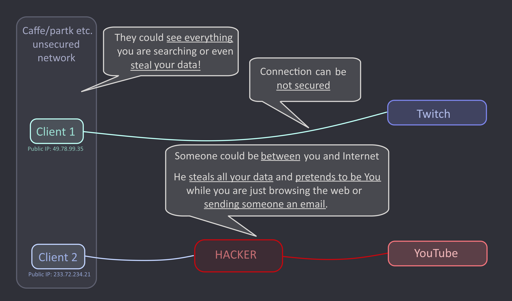

In today’s interconnected digital world, the importance of a
VPN (Virtual Private Network) connection cannot be overstated. With the
increasing prevalence of cyber threats and privacy concerns, VPNs have
become an essential tool for safeguarding sensitive data and ensuring
online anonymity.
Connection
without VPN from unsafe place could be dangerous
Without encryption, your privacy is at risk of invasion and
tracking.
Geolocation tracking: Your physical location can be traced, posing
risks to your safety and security.
Content restrictions: Some websites and services may be inaccessible
due to geographic restrictions.

Image showing importance of
vpn
Benefits of Using a VPN
Security: VPNs encrypt your internet connection, protecting your
data from potential hackers or surveillance.
Privacy: They hide your IP address, making it difficult for websites
and advertisers to track your online activities.
Access: VPNs can bypass geographic restrictions, allowing you to
access content that may be blocked in your region.
Anonymity: By masking your IP address, VPNs provide a level of
anonymity while browsing the internet.
Public Wi-Fi Security: When using public Wi-Fi, VPNs add an extra
layer of security, preventing others from intercepting your data.
Business Use: VPNs are essential for remote workers, providing a
secure connection to company networks and resources.